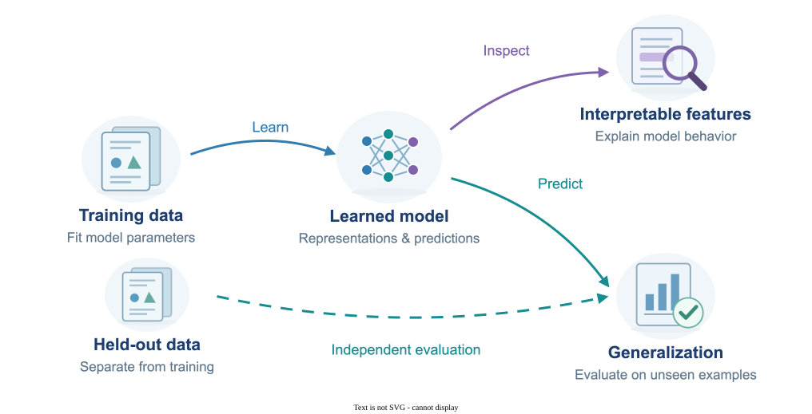

Interpretability & Generalization
Interpretability asks what a model has learned and how its internal features shape its predictions. Generalization asks how well those predictions extend to data the model has not seen during training, including settings where the model fits its training data exactly. My work connects these questions through studies of neural representations, overfitting, neural tangent kernel models, and the generalization of federated, continual, transfer, and meta-learning.
System Diagram

My publications on this area
Peer-Reviewed Conference Papers
-
Moghis Fereidouni, Muhammad Umair Haider, Peizhong Ju, and A.B. Siddique, "Evaluating
Sparse Autoencoders for Monosemantic Representation,"
Findings of 19th Conference of the European
Chapter of the Association for Computational Linguistics (EACL'26), 2026
arXiv version
@article{fereidouni2025evaluating, title={Evaluating Sparse Autoencoders for Monosemantic Representation}, author={Fereidouni, Moghis and Haider, Muhammad Umair and Ju, Peizhong and Siddique, AB}, journal={arXiv preprint arXiv:2508.15094}, year={2025} } -
Junze Deng, Qinhang Wu, Peizhong Ju, Sen Lin, Yingbin Liang, and Ness Shroff,
"Unlocking the Power of Rehearsal in Continual Learning: A Theoretical Perspective,"
42nd International Conference on Machine Learning (ICML'25).
arXiv version
ICML
@inproceedings{deng2025unlocking, title={Unlocking the Power of Rehearsal in Continual Learning: A Theoretical Perspective}, author={Deng, Junze and Wu, Qinhang and Ju, Peizhong and Lin, Sen and Liang, Yingbin and Shroff, Ness}, booktitle={International Conference on Machine Learning}, year={2025}, organization={PMLR} } -
Peizhong Ju, Haibo Yang, Jia Liu, Yingbin Liang, and Ness B. Shroff,
"Can We Theoretically Quantify the Impacts of Local Updates on the Generalization Performance of Federated
Learning?" 25th International Symposium on Theory, Algorithmic Foundations, and Protocol
Design for Mobile Networks and Mobile Computing (MobiHoc'24), 2024
.
arXiv version
@inproceedings{ju2024can, title={Can We Theoretically Quantify the Impacts of Local Updates on the Generalization Performance of Federated Learning?}, author={Ju, Peizhong and Yang, Haibo and Liu, Jia and Liang, Yingbin and Shroff, Ness}, booktitle={Proceedings of the Twenty-fifth International Symposium on Theory, Algorithmic Foundations, and Protocol Design for Mobile Networks and Mobile Computing (MobiHoc'24)}, pages={141--150}, year={2024} } -
Sen Lin, Peizhong Ju (co-first author), Yingbin Liang, and Ness B. Shroff, "Theory
on Forgetting and Generalization of Continual Learning," 40th International
Conference on Machine Learning (ICML'23), 2023.
arXiv version
ICML
@inproceedings{lin2023theory, title={Theory on forgetting and generalization of continual learning}, author={Lin, Sen and Ju, Peizhong and Liang, Yingbin and Shroff, Ness}, booktitle={International Conference on Machine Learning}, pages={21078--21100}, year={2023}, organization={PMLR} } -
Peizhong Ju, Yingbin Liang, and Ness B. Shroff, "Theoretical Characterization of
the Generalization Performance of Overfitted Meta-Learning," 11th
International Conference on Learning Representations (ICLR'23), 2023.
arXiv version
ICLR
@inproceedings{jutheoretical, title={Theoretical Characterization of the Generalization Performance of Overfitted Meta-Learning}, author={Ju, Peizhong and Liang, Yingbin and Shroff, Ness}, booktitle={The Eleventh International Conference on Learning Representations}, year={2023}, url={https://openreview.net/forum?id=Jifob4dSh99} } -
Peizhong Ju, Xiaojun Lin, and Ness B. Shroff, "On the Generalization Power of
Overfitted Three-Layer Neural Tangent Kernel Model," 36th Conference on Neural Information
Processing Systems (NeurIPS'22), 2022.
arXiv
version
NeurIPS
@article{ju2022generalization, title={On the generalization power of the overfitted three-layer neural tangent kernel model}, author={Ju, Peizhong and Lin, Xiaojun and Shroff, Ness}, journal={Advances in neural information processing systems}, volume={35}, pages={26135--26146}, year={2022} } -
Peizhong Ju, Xiaojun Lin, and Ness B. Shroff, "On the Generalization Power of
Overfitted Two-Layer Neural Tangent Kernel Models," Proceedings of the 38th International
Conference on Machine Learning (ICML'21), PMLR 139:5137-5147, 2021.
arXiv version
ICML
@inproceedings{ju2021generalization, title={On the generalization power of overfitted two-layer neural tangent kernel models}, author={Ju, Peizhong and Lin, Xiaojun and Shroff, Ness}, booktitle={International Conference on Machine Learning}, pages={5137--5147}, year={2021}, organization={PMLR} } -
Peizhong Ju, Xiaojun Lin, and Jia Liu, "Overfitting Can Be Harmless for Basis
Pursuit, But Only to a Degree," accepted as spotlight presentation at 34th
Conference on Neural Information Processing Systems (NeurIPS'20), 2020 (acceptance rate: 20%,
spotlight presentations: 3%). spotlight
arXiv version
NeurIPS
@article{ju2020overfitting, title={Overfitting can be harmless for basis pursuit, but only to a degree}, author={Ju, Peizhong and Lin, Xiaojun and Liu, Jia}, journal={Advances in Neural Information Processing Systems}, volume={33}, pages={7956--7967}, year={2020} }
Journal Papers
-
Muhammad Umair Haider, Hammad Rizwan, Hassan Sajjad, Peizhong Ju, and A.B. Siddique,
"Neurons Speak in Ranges: Breaking Free from Discrete Neuronal Attribution," Transactions on Machine
Learning
Research (TMLR), 2026.
arXiv version
@article{haider2025neurons, title={Neurons Speak in Ranges: Breaking Free from Discrete Neuronal Attribution}, author={Haider, Muhammad Umair and Rizwan, Hammad and Sajjad, Hassan and Ju, Peizhong and Siddique, AB}, journal={arXiv preprint arXiv:2502.06809}, year={2025} }
Pending Papers
-
Peizhong Ju, Sen Lin, Mark S. Squillante, Yingbin Liang, and Ness B. Shroff,
"Generalization Performance of Transfer Learning: Overparameterized and Underparameterized Regimes."
arXiv version
@article{ju2023generalization, title={Generalization performance of transfer learning: Overparameterized and underparameterized regimes}, author={Ju, Peizhong and Lin, Sen and Squillante, Mark S and Liang, Yingbin and Shroff, Ness B}, journal={arXiv preprint arXiv:2306.04901}, year={2023} }
Book Chapters
- Peizhong Ju, Xiaojun Lin, and Ness B. Shroff, "On the Generalization Power of Overfitted Two-Layer Neural Tangent Kernel Models," Chapter 3 of Artificial Intelligence for Edge Computing, Springer Nature, August 2023. DOI: 10.1007/978-3-031-40787-1_3
Explore Machine Learning
- Reinforcement Learning
- Federated Learning
- Continual & Transfer Learning
- Diffusion & Flow Matching
- Interpretability & Generalization